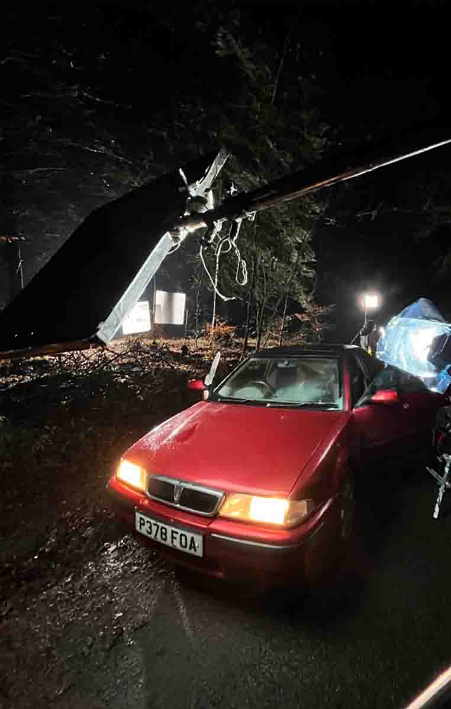
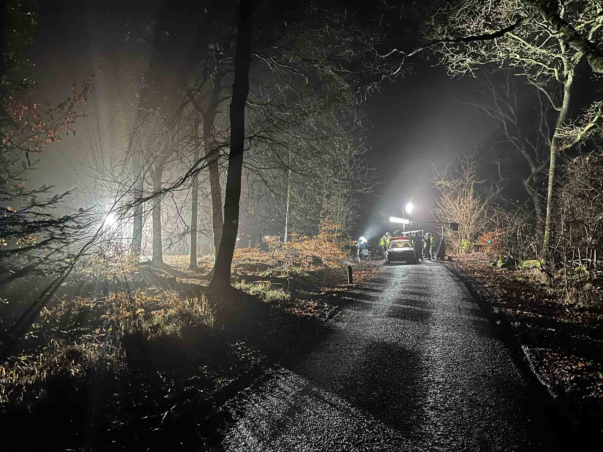

Eve is a short horror film I worked on as a spark during production.
My role involved assisting in the setup and pack-down of a wide range of lighting configurations across the shoot. I worked with fixtures including Nanlux, Aputure, Astera, Vortex, and LiteMat units, adapting setups to suit different locations and lighting requirements.
I also supported the powering of lighting rigs using generators and Instagrid battery systems, helping to ensure reliable power delivery and efficient workflow throughout the production.

